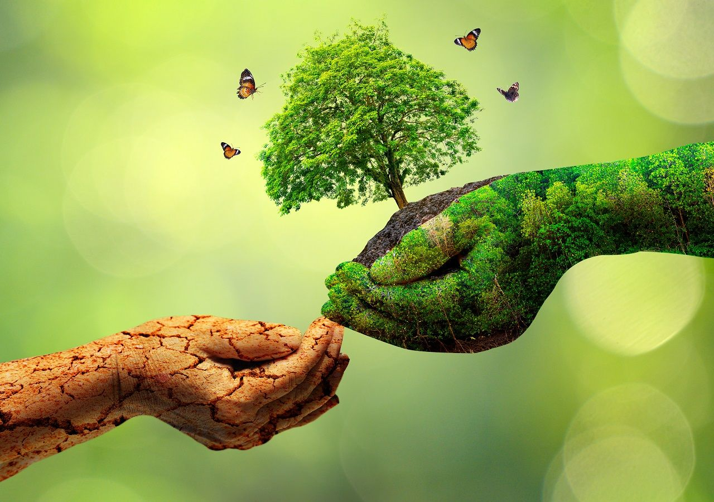
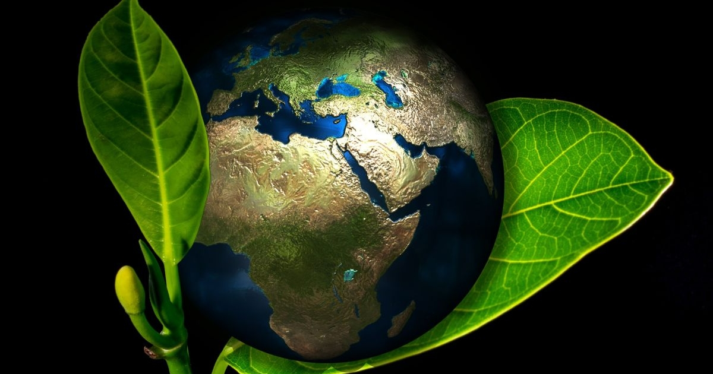

Política e Meio ambiente, Politicas em Prol do Meio Ambiente
A preocupação ambiental tornou-se recorrente nos meios acadêmicos e instituições políticas no decorrer da segunda metade do século XX. A partir daí, podemos destacar os seguintes encontros e conferências:
-Clube de Roma, 1968:
Em 1968, houve o chamado “clube de Roma” que foi um encontro, que reuniu líderes (diversos) para discutir alguns dos principais problemas ambientais. O primeiro encontrou, deu fruto a um livro “Os limites do crescimento” em 1972, um livro sobre meio ambiente, que foi vendido no mundo inteiro. A entidade do Clube de Roma, existe até hoje, e temos o ex-presidente Fernando Henrique Cardoso é um dos membros do grupo
-Conferência das Nações Unidas sobre o Meio Ambiente - Conferência de Estocolmo, 1972:
A Conferência de Estocolmo ou Conferência das Nações Unidas sobre o Meio Ambiente Humano ocorreu entre 5 e 16 de junho de 1972, na capital da Suécia.
Vale ressaltar que esse foi o primeiro evento organizado pela ONU para debater questões ambientais de maneira global. E essa conferência é considerada um marco na história da preservação ambiental pois dirigentes do mundo inteiro se reuniram para falar sobre o tema.
Quanto aos objetivos desta conferência foram debatidas e consideradas, as mudanças climáticas e a qualidade da água, soluções para reduzir os desastres naturais, limitar a utilização de pesticidas na agricultura entre outras. Além de abordar as políticas de desenvolvimento humano e a busca por um padrão comum de preservação dos recursos naturais. Após os debates foi elaborado o documento intitulado "Declaração sobre o Meio Ambiente Humano".
Finalmente a importância dessa conferência, que foi abrir caminho para o desenvolvimento de forma sustentável, promovendo a consciência ecológica e Direito Ambiental. E após a reunião também foi inaugurada a agenda mundial de discussões ambientais.
-Conferência das Nações Unidas sobre o Meio Ambiente e o Desenvolvimento - Rio 92 ou ECO 92, 1992:
Ela foi a primeira Conferência das Nações Unidas sobre o Meio Ambiente e Desenvolvimento, que foi realizada no Rio de Janeiro (Brasil) em 1992. E teve muitos desdobramentos importantes sobre a ciência, diplomacia, política e na área ambiental. Uma delas foi a formação de princípios gerais, com uma grande discussão sobre o desenvolvimento sustentável, criado em 1987 pelo Relatório Brundtland. Durante a conferência Rio 92, foi apresentada a Agenda 21, que seria uma série de recomendações para os países, nações conseguiram um desenvolvimento sustentável melhor. Uma das principais contribuições da conferencia foi a discussão sobre o quadro de mudança de clima, que foi uma parte responsável por debater as várias mudanças climáticas globais, e através disso se idealizou o Protocolo de Kyoto
-Protocolo de Kyoto, 1997:
Foi o que definiu a diminuição de 5% nas emissões de CO2, tendo como base o ano de 1990, com serventia até o ano de 2012. Os Estados Unidos, sendo os maiores emissores de CO2 reunido desde a Revolução Industrial, não autenticaram o protocolo. Assim como a Austrália em 1997, porém, dez anos depois durante a Conferência de Bali, decidiram aceitar as colocações de Kyoto. O protocolo mostrou possibilidades para os países se ajustarem às metas determinadas, que hoje é chamado de Mecanismos de Desenvolvimento Limpo, como os Créditos de Carbono. Os créditos são enviados pelas empresas ou países que alcançaram suas metas e são comprados por aqueles que não se conformaram, incentivando uma economia mais sustentável e estimulando investimentos em fontes alternativas de energia.
-Conferência das Nações Unidas sobre o Meio Ambiente e o Desenvolvimento - Rio + 20, 2012:
Buscou discutir o conceito de Economia Verde para alcançar o desenvolvimento sustentável e a erradicação da pobreza, assim como o papel das instituições nesse processo. Em razão de um cenário internacional voltado para a crise econômica mundial e as divergências entre os países desenvolvidos e os países emergentes, a reunião acabou produzindo muitas recomendações, mas pouco avançou no estabelecimento de metas para os diferentes grupos de países.